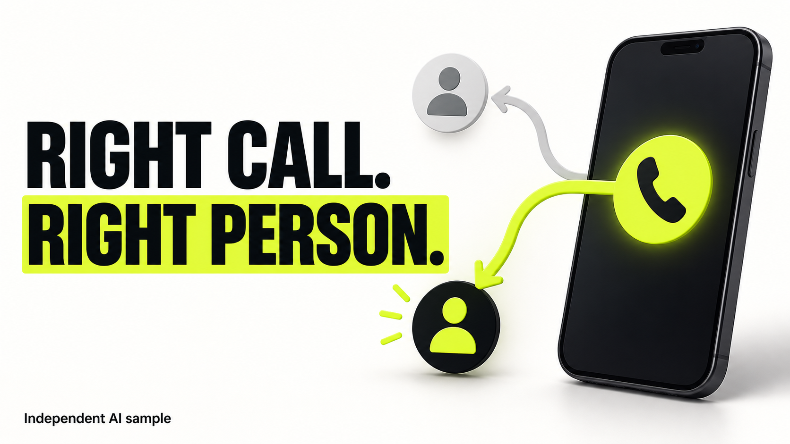

RECEIPT WORK · AI-ASSISTED PORTFOLIO
Right call. Right person.
A thumbnail concept for a business-call routing explainer: four words, one clear visual path, and a selected recipient.

Download original PNG · Production notes
Independent AI-generated demonstration, created September 15, 2026. Quo did not commission or approve this sample. The phone is an illustration, not a product screenshot. No click-through-rate results are claimed.
Native PNG: 1672 × 941 pixels, approximately 16:9. Flattened bitmap. The white, black and chartreuse palette was informed by Quo's public website; final brand rules and source-file requirements would be agreed for a commissioned design.